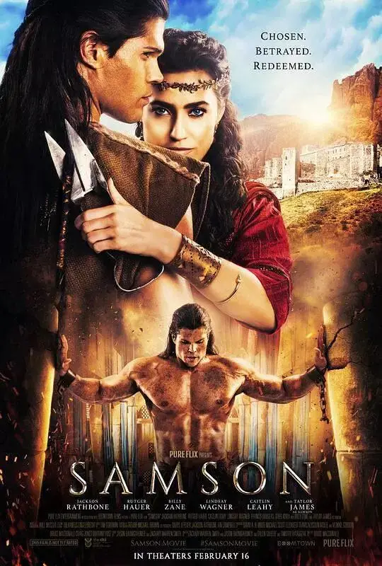
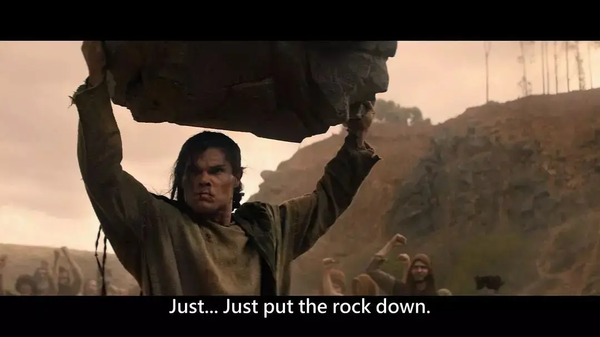
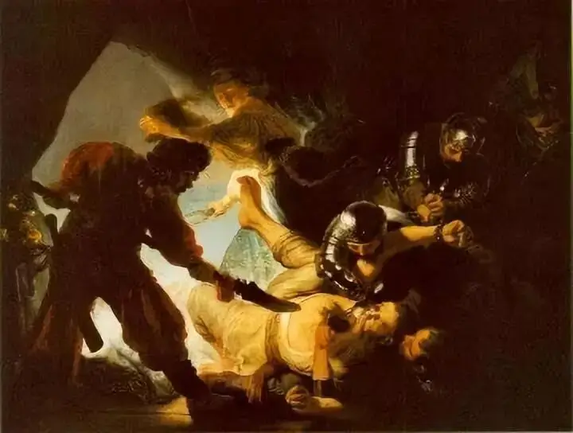
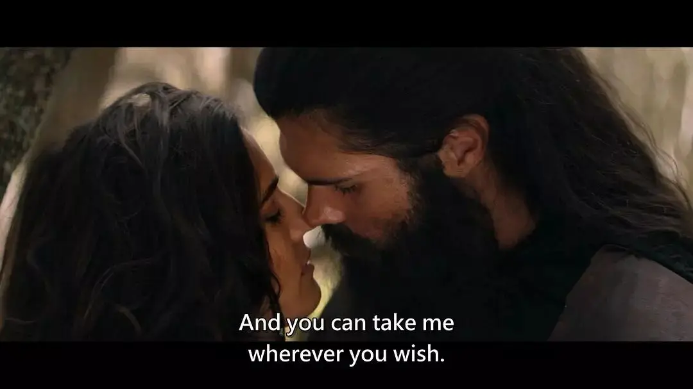
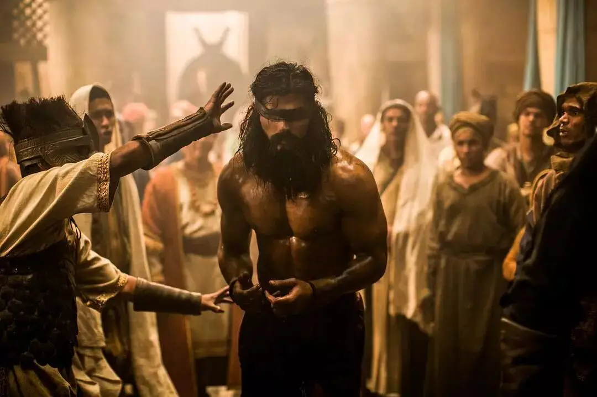
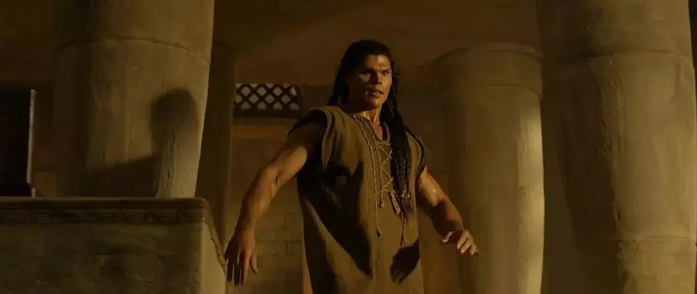
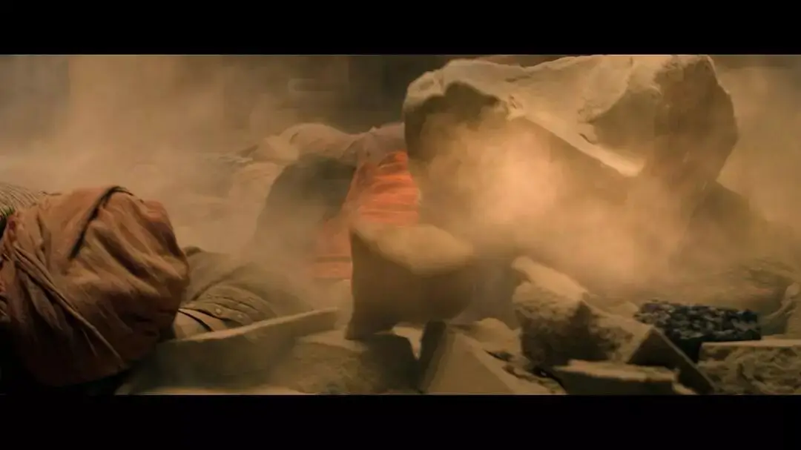
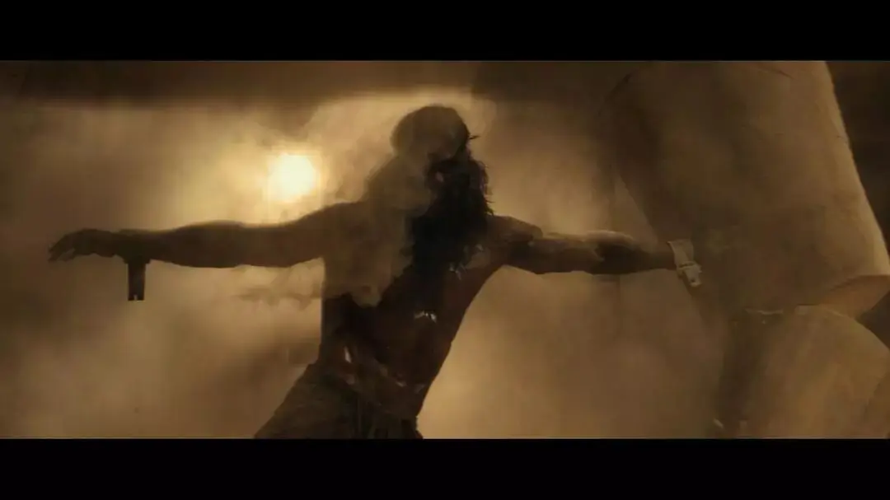

| 2018年新片《参孙》
作者：利河伯
首先，这本是一部电影，如果一位观众本来是对上帝的话语有兴趣，那么首先应该是去读圣经。
假如对记录在旧约士师记里，关于参孙的这些经文比较熟悉的话，那么，和电影中编剧所编织出来的故事相比，你会发现差异还蛮大的。
当然，有关参孙的故事，在西方大概是家喻户晓吧？其情况可能有点类似中国的《西游记》的知名度——单就其文学的影响力而言。

不少画家都以参孙为题材创作过相应的作品，比如特别有名的，伦勃朗的《参孙被弄瞎眼睛》，以及鲁本斯的《参孙与大利拉》等。

| 伦勃朗名画《参孙被弄瞎眼睛》
如果说这部电影在何等层面上贴近了圣经原著，那么大概是在这些最有名的情节上，比如参孙双目被非利士人刺瞎，还有他和大利拉之间的关系等。

在其它文艺领域应该也是这样，如法国作曲家圣桑也有一部歌剧《参孙与大利拉》（Samson et Dalila） 。
圣经作为西方文化的重要母本，其叙事手法和内容题材，普泛地渗入了日常生活中，而参孙的故事就是其中的一个组成部分。
这大概也是它可以被收录为电影改编题材的原因。
| 鲁本斯名画《参孙与大利拉》
而这部电影，和《耶稣传》这样完完全全扣住圣经经文，连对白都照搬《路加福音》经文的传教电影是不同的。
作为一部具有商业目的的电影，本片必须顾及到观众的看法，编剧为此对《圣经》的原作做了一些修改，比如人物形象的塑造，比如人物关系的处理，再比如要兼顾一些为了票房需求的编剧准则，以及演员的选用和招募。
基于这些原因，这部电影是如今呈现在我们面前的这个形态。
一些与圣经原作不同之处：
首先，在参孙的生平中，两位非利士女子，其实都欺骗过他。
他被杀的前妻（亭拿女子）是因为生命受到威胁（在圣经里没有记述她的名字），而大名鼎鼎的大利拉则干脆是一位女版犹大，完全就是为了钱的缘故，欺骗了参孙。
这两个女人，都并不美好。
而电影里对这两个角色的处理，多了很多“人性化”的色彩。
比如给参孙的第一个非利士妻子起了个名字，把她出卖参孙的罪，归到了大利拉身上。
而这个异域女子，就此变成了心地善良的无辜女子。
这样，编剧和导演大体上把参孙和她的故事，变成了一个有关“追求自由”而产生心灵共鸣的爱情故事。
当代的编剧在面对《圣经》古老文本的时候，有他们自己的设计的意图，通过这种手法，大体上也是衬托了参孙的英雄形象。
并且通常来说，英雄配美女好像比较说得过去，譬如好莱坞著名的影片《勇敢的心》里，梅尔吉布森的角色能站得住脚，概莫也有此等原因。
| 《勇敢的心》剧照
甚至对于大利拉这个角色的处理也是如此，编剧在影片最末一段情节中，设计了大利拉懊悔至监狱中探访参孙，并要出钱把他赎出来的桥段，把这个关于参孙的故事里著名的坏女人，塑造得更有人情味。
而事实上，在圣经中，大利拉对参孙的欺骗，绝不像电影中表现得只有那么一回，而是几次三番的欺骗，在圣经里，大利拉可是个彻头彻尾的反面角色。
大致上我们也可以理解，为了映照参孙的英雄形象，这两位女性角色都做了不同程度的改变，以衬托英雄的有情有义，折服异性。

虽然圣经没有清楚说明，但据说传统观点里，参孙并非电影中这样一位高大挺拔的英雄形象。
传统的犹太人并不是体型伟硕的种族，他们与人高马大的巨人亚衲族相比，身形是要小得多，甚至后来非利士巨人，也曾把以色列人吓得战战兢兢。

这部电影最末提及大卫王，在参孙以后，大卫王以前，出现过扫罗王，这就是一位清楚明白说明身高外表都非常突出的男子，但是他内心的信仰并未得到耶和华的认同，而身材矮小得多的大卫王则因为他的敬虔而得到上帝的拣选。
圣经在这些男性角色身上所要强调的，并不是依仗外形与身高，而是依靠上帝。
同样的，参孙据说，也并非高大挺拔的男人，相反，他是个身高并不太高的男士，他的伟力神勇，其实都来自上帝特别的恩赐。

在这部电影里，反一号非利士王子这个角色，则是圣经里完全没有提及的。
说到电影票房的秘诀，大名鼎鼎的希区柯克曾经说过一个规律：反派越坏，票房越好。
这个角色的出现，大致就是为这个目的服务的——以至于他还没有出手杀了片中他的爹，我就已经预期到接下来他要做的。
就连选角也体现了这种意图，演员一出现，我一看怎么这么眼熟，再一想原来是《暮光之城》里的一个男演员，够帅又够坏，对于推动票房功勋卓著。
影片大致给我们一个并不深刻不难理解的主题，就是自由，所以参孙就成了《勇敢的心》男主角那样的民族英雄角色，但圣经所表达的，却并不是这样的。
影片并没有描述参孙出生前的情形，但圣经有相当一段篇幅来描述参孙的出生，这段记载在圣经旧约的士师记13章。在13章的开头，我们能看到这段记述：
以色列人又行耶和华眼中看为恶的事，耶和华将他们交在非利士人手中四十年（士师记13:1）。
所以，表面看来以色列人与非利士人的争战，是一种民族的冲突，追求从奴役中获取自由，但实际上以色列人灾难的根源则是他们本身的罪恶。
接着，参孙看上了他的第一个妻子，原来按照律法和以色列人的习俗来看，参孙本不应该找异邦女子的，而在这里，圣经里也如此告诉我们：
他（参孙）的父母却不知道这事是出于耶和华，因为他找机会攻击非利士人，那时非利士人辖制以色列人。（士师记14:4）
在这里，我感慨的不是参孙与他外邦妻子的心灵共鸣和爱情。而是人的错误，原来也在神的计算之内。
你心里的抉择、愿望、期待，神原本都非常清楚，而这一切都在祂的掌控和计划之中，为要成就上帝自己的旨意。
所以，借着圣经的启示，我们看见在人的意念之上，还有一位全权的上帝，祂引导人的历史，成就祂自己的命定。
而若从人性层面来看，参孙应该是有一些弱点的，比如他的好色，虽然他贵为神所拣选的拿细耳人，但却嫖妓，所谓的好色邪荡。
电影中并未去表现参孙这一层面的形象（而有这部分底色的参孙，才是一个完整的参孙），而根据圣经记载，他在处理和大利拉的关系上显得也并没有太多智慧，多次受骗不说，最后还被卖，并差点把自己的命给搭上了。
这个五迷三倒的过程中，在关于自己爱情和婚姻的事上，参孙并没有求告耶和华，而是由着他肉体的喜爱而行。
须知：婚姻是人生除了信仰以外，最重要的事情。
而电影编剧或导演则回避了这段参孙被连续诓骗的情节，或许是觉得这有损参孙的英雄形象、使参孙显得智商不高，或者是为了控制影片的篇幅剪掉了，不得而知。
从上述这些内容来看，参孙当然绝非一个完美的人（事实上，本片片尾提及的大卫王，堪称非常合乎上帝心意的君王，贤明神武、谦卑敬畏，但同样在美色和肉体上犯了大罪）。
但是，在新约希伯来书十一章中，参孙的名字仍然赫赫在列于诸信心伟人，上帝拣选的人，并不是完人。
他和基甸、大卫、撒母耳等“耶和华的战士”一样，他们因着信，制服了敌国，行了公义，得了应许，堵了狮子的口，灭了烈火的猛势，脱了刀剑的锋刃，软弱变为刚强，争战显出勇敢，打退外邦的全军。（希伯来书11:34）
当参孙顺服在上帝的心意里，成为上帝手里的器皿时，他就耀现了生命中最美好和刚强的那一部分。
而当他行在自己的心意，按照肉体情欲而行的时候，他则陷落在失败、痛苦和耻辱中。
在不信靠上帝的时候，参孙只是一个普通人，他身上最美好及最有光彩的那些事情，则是在他顺服上帝带领的时候，这就是一个圣徒真实的人生。
最后，这部电影毕竟是一部基督教题材的电影，在血腥程度上来看，《参孙》还是不会像《西部世界》这类的美剧那么滥用血浆，驴腮骨击杀敌人一段看得过瘾，可是还是有所节制的。

关注并回复：参孙
获取电影资源
相关推荐：
奥斯卡最佳外语片《修女艾达》| 历史虽然静默，但都在上帝掌管之下
人！你到底从历史中学到了什么
继《沉默》之后，又一部必刷的信仰力作
如果电影可以是虔诚的，那就应该这样！
这里没有挑逗你眼目情欲的小鲜肉
也没有挑动你肉体情欲的段子
更没有膨胀你今生骄傲的鸡血
我们只在乎那些最质朴真诚的作品
在那里我们才能恢复真正的想象力
我们也坚信这才是我们真正需要的

ID:Six_hundred_hits
长按二维码，一键关注
【六百击】
-END-
电影评论
尽情分享朋友圈

苹果打赏通道
小提示：文末广告是腾讯配送广告，内容与本号无关，但您的每次点击（无需反复点）都会给平台带来几毛收益，欢迎您点击支持六百击。